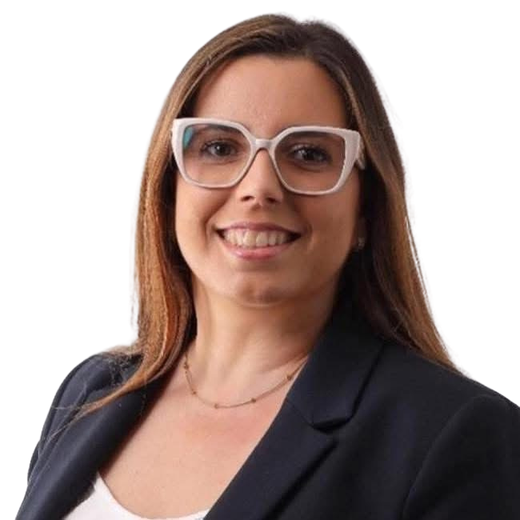

Caros Camaradas,
Somos mais fortes quando promovemos a participação, a proximidade e o envolvimento dos nossos militantes, simpatizantes e da comunidade.
Queremos uma secção aberta às pessoas, às suas ideias, preocupações e propostas, capaz de criar espaços de diálogo, reflexão e partilha sobre os desafios que se colocam a Moreira, Vila Nova da Telha e ao concelho da Maia. Acreditamos que a política se constrói através da escuta, valorizando diferentes perspetivas e transformando contributos em ação.
Propomo-nos dinamizar encontros, debates e iniciativas que aproximem a secção da população, das associações, das empresas, dos jovens e de todos aqueles que desejam participar ativamente na construção de soluções para a melhoria da qualidade de vida da nossa comunidade.
Com espírito de união, responsabilidade e trabalho coletivo, queremos construir uma secção mais participativa, mais próxima e mais preparada para responder aos desafios do presente e do futuro.
Susana Dias
Candidata a Secretária Coordenadora da Secção de Pedras Rubras
